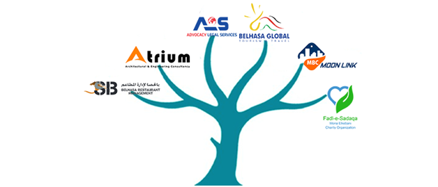

<?xml version="1.0" encoding="UTF-8"?><rss version="2.0"
	xmlns:content="http://purl.org/rss/1.0/modules/content/"
	xmlns:wfw="http://wellformedweb.org/CommentAPI/"
	xmlns:dc="http://purl.org/dc/elements/1.1/"
	xmlns:atom="http://www.w3.org/2005/Atom"
	xmlns:sy="http://purl.org/rss/1.0/modules/syndication/"
	xmlns:slash="http://purl.org/rss/1.0/modules/slash/"
	>

<channel>
	<title>Successful Logo Design &#8211; Blog</title>
	<atom:link href="https://www.ehorizon.ae/blog/tag/successful-logo-design/feed/" rel="self" type="application/rss+xml" />
	<link>https://www.ehorizon.ae/blog</link>
	<description></description>
	<lastBuildDate>Thu, 01 Mar 2018 05:29:32 +0000</lastBuildDate>
	<language>en-US</language>
	<sy:updatePeriod>hourly</sy:updatePeriod>
	<sy:updateFrequency>1</sy:updateFrequency>
	<generator>https://wordpress.org/?v=4.4.15</generator>
	<item>
		<title>Get Started with a Successful Logo Design Process</title>
		<link>https://www.ehorizon.ae/blog/2016/08/25/get-started-with-a-successful-logo-design-process/</link>
		<comments>https://www.ehorizon.ae/blog/2016/08/25/get-started-with-a-successful-logo-design-process/#respond</comments>
		<pubDate>Thu, 25 Aug 2016 13:45:29 +0000</pubDate>
		<dc:creator><![CDATA[eHorizon]]></dc:creator>
				<category><![CDATA[Logo Design]]></category>
		<category><![CDATA[Successful Logo Design]]></category>

		<guid isPermaLink="false">https://www.ehorizon.ae/blog/?p=119</guid>
		<description><![CDATA[<p>There is much more to a logo than what we think of. It has become the prime identity of a business, giving out a spot on the message of what your products and services stand for. Logo designing sounds all simple but interestingly, it has got a lot more to it than what we are [&#8230;]</p>
<p>The post <a rel="nofollow" href="../../../2016/08/25/get-started-with-a-successful-logo-design-process/index.html">Get Started with a Successful Logo Design Process</a> appeared first on <a rel="nofollow" href="../../../index.html">Blog</a>.</p>
]]></description>
				<content:encoded><![CDATA[<p style="text-align: justify;">There is much more to a logo than what we think of. It has become the prime identity of a business, giving out a spot on the message of what your products and services stand for. Logo designing sounds all simple but interestingly, it has got a lot more to it than what we are aware of.</p>
<p style="text-align: justify;">A logo stays, no matter where your business stands in future. It is an imprint in the mind of your customers who can relate to your services easily leading to a prolific brand identity.</p>
<div id="attachment_120" style="width: 638px" class="wp-caption aligncenter"><p class="wp-caption-text">A Successful Logo Design Process</p></div>
<p style="text-align: justify;">To refrain from falling into pitfalls, the foremost thing is to structure or plan out a comprehensive design process that can give your business a name, an identity. And it is exactly this identity that will make your products and services stand out in the market. A logo is not just the face of a business; it is more of what your business symbolizes and stands for. And to conveniently achieve that, designers have to be creative, think out-of-the-box, and embrace uniqueness when designing a logo.</p>
<p style="text-align: justify;">The logo design experts of eHorizon bring to you some vital tips that can enhance the process of designing your logo, and help you design something which can actually help you carve your brand identity into the big league.</p>
<p style="text-align: justify;"><strong>Know Your Business First To Design an Effectual Logo</strong></p>
<div id="attachment_121" style="width: 638px" class="wp-caption aligncenter"><p class="wp-caption-text">Know Your Business First To Design an Effectual Logo</p></div>
<p style="text-align: justify;">To begin with the entire logo design process, you have to conceptualize the designs based on your understanding and meaning of the business. You have to know what message your logo should actually be conveying to people, instead of just leaving customers with deciphering the meanings on their own.</p>
<p style="text-align: justify;">Only when you know the intended message will you be able to deliver the same effectively to your target audience. There are essentially 5 important elements that can help you get a clear idea of conveying the message &#8211; Simple, Memorable, Versatile, Enduring and Appropriate – and all of these combined can help design the perfect logo for your business. Don’t give your customers the effort and struggle of understanding what your logo symbolizes. Picture it in a way that instantly hints out what your business works for.</p>
<p style="text-align: justify;"><strong>No Copying, Stay Unique</strong></p>
<div id="attachment_122" style="width: 638px" class="wp-caption aligncenter"><p class="wp-caption-text">No Copying, Stay Unique</p></div>
<p style="text-align: justify;">Crumple the papers stating ‘The <a href="../../../../logo-design-services.html" target="_blank">best logo design processes</a>’ and toss them into your bin. You are way more creative and innovative than that, really. Come up with your own design process. Yes, most of the design process elements will still be standard, and that is exactly what you as a successful logo designer need to break out from.</p>
<p style="text-align: justify;">Stay as unique as you can. Switch on your creative mode and go about a process which you know would suit the best for your business logo. Research, reflect, design briefing, sketching, conceptualizing, and presentation together comprises the ins and outs of a logo design process. But for a successful one, it is best that you come up with your own. The uniqueness of your ideas and methodologies will actually show greatly on the results; they always do.</p>
<p style="text-align: justify;"><strong>Chase </strong><strong>Your Clients and Ask the Right Questions</strong></p>
<div id="attachment_123" style="width: 638px" class="wp-caption aligncenter"><p class="wp-caption-text">Chase Your Clients and Ask the Right Questions</p></div>
<p style="text-align: justify;">If you are involved with clients, don’t do anything which might upset them, as that’s what we have always been taught. You literally need to get into their minds to understand what they want, and to realize what their audience need.</p>
<p style="text-align: justify;">Client feedback must be ongoing throughout the entire logo design process. Don’t take a step back whenever you need to contact your clients, because you need to know what exactly it is that you have to deliver. Take a step, and inform the client. If there are 10 steps, you get in touch with the client double the times. But whatever and however you do, make sure you are constantly communicating with your clients regarding the update, downfalls, and problems with an interactive client feedback method. Don’t let your clients feel left out. Talk to them as much as you can as that will only help you understand the project better.</p>
<p style="text-align: justify;"><strong>Always Take Inspiration from Others, No Matter How Good You Are</strong></p>
<div id="attachment_124" style="width: 638px" class="wp-caption aligncenter"><p class="wp-caption-text">Always Take Inspiration from Others</p></div>
<p style="text-align: justify;">Just because you are the best, does not mean others are not better. There are some major brands you can really take some inspiration from, and try knowing what they were actually thinking about while designing such successful logos.</p>
<p style="text-align: justify;">Gain an insight into such profound logos designed in the past. There are some impressive examples you can research on and look up to. Popular brands like Nike, Chanel, and Volkswagen can actually help you understand how to keep your logo simple yet give out a précis meaning. Nike, especially, rules out colors to just show you how you can convey your message by just using one color and keeping it simple and clear.</p>
<p style="text-align: justify;">You need to introduce fresher and better designs to create an appropriate logo, and for that, regular studying and research are necessary to keep yourself updated and educate yourself and your team consistently.</p>
<p style="text-align: justify;"><strong>Literally,</strong><strong> Exploit Each And Every Resource Available To You</strong></p>
<div id="attachment_125" style="width: 638px" class="wp-caption aligncenter"><p class="wp-caption-text">Each And Every Resource Available To You</p></div>
<p style="text-align: justify;">Gather all the necessary tools, materials, and diverse resources to ensure that you are actually going on the right path and following a structured logo design methodology.</p>
<p style="text-align: justify;">If you need some references or guidance, you can make use of multifarious online and offline resources such as paper materials, books, online portals, magazines, galleries, study tips and such, if you find yourself stuck at some level or step of your process. Just don’t stay stuck as that will just waste a lot of your time, and a lot of your clients’ time and money as well. When resources are available, use them to your best advantage at all times.</p>
<p style="text-align: justify;"><strong>Use Attractive Color and Typefaces</strong></p>
<div id="attachment_126" style="width: 638px" class="wp-caption aligncenter"><p class="wp-caption-text">Use Attractive Color and Typefaces</p></div>
<p style="text-align: justify;">Your logo needs to be appealing. It needs to have that quality which can immediately grasp and draw the attention of your customers. A logo needs to extremely attractive, and for that, you need to employ and splash in the right color, fonts, and textures to actually bring out the X factor in your logo.</p>
<p style="text-align: justify;">Just throwing any font and color is not the way it’s supposed to be done. The elements need to be in perfect blend with each other. The color needs to go with the font, the font needs to gel with the imagery. Every element in your logo must go hand in hand with the other. All the color and fonts need to achieve the goal of your logo that is being designed; else it fails to live up to the intended purpose.</p>
<p style="text-align: justify;"><strong>Rigorous Brainstorming and Mind Mapping Is Imperative</strong></p>
<div id="attachment_127" style="width: 638px" class="wp-caption aligncenter"><p class="wp-caption-text">Rigorous Brainstorming</p></div>
<p style="text-align: justify;">Whether you are working alone or with a team, you have to get involved in regular brainstorming sessions to let those concepts and ideas flow and introduce themselves in a bespoke manner. Keep your brain exercise to let the ideas flow in a proper manner. Yes, designing a logo could be tedious. And that is exactly why mind mapping and sketching is required for an effectual logo designing process.</p>
<p style="text-align: justify;">Switch on your brain bulb and jump onto the bandwagon of creativity by paying attention to the minutest details that can help with the process, or go wrong with it. Keep yourself and your team members motivated to keep the energy levels high all the time. The more enthusiastic you are about the project, the better outcomes you will receive at the end of the day.</p>
<p style="text-align: justify;"><strong>Review, Revise and Improvise</strong></p>
<div id="attachment_128" style="width: 638px" class="wp-caption aligncenter"><p class="wp-caption-text">Review, Revise and Improvise</p></div>
<p style="text-align: justify;">These three steps are the final stops for finishing off your logo design project with ease. Don’t think you’re done until you are a hundred percent sure.</p>
<p style="text-align: justify;">Get in touch with the client and send in your file for a review. Go through regular revisions and keep checking the major and minor spots of your logo every now and then. Mistakes are not identifiable just by looking at it; mistakes can be hidden and extremely minute. Revise the design of your logo if need be, and make efforts to improve the areas that require changes. Revising and improving does not need to be done only because you think there is some problem with the way you’ve designed your logo, it is just done to make sure everything is just right and perfect to go live.</p>
<p style="text-align: justify;">No one is born the perfect designer. You evolve as you study and work. Logo design is not that difficult, however, it is a pretty time-consuming process which requires patience as the greatest tool to accomplish the desired results. Take your time to design your logo, but take the time to design a desirable one. As already mentioned before, the logo that you design will stay with the business and remain to be the face and symbol of what your company stands for. And you simply cannot make compromises with your brand identity.</p>
<p>The post <a rel="nofollow" href="../../../2016/08/25/get-started-with-a-successful-logo-design-process/index.html">Get Started with a Successful Logo Design Process</a> appeared first on <a rel="nofollow" href="../../../index.html">Blog</a>.</p>
]]></content:encoded>
			<wfw:commentRss>https://www.ehorizon.ae/blog/2016/08/25/get-started-with-a-successful-logo-design-process/feed/</wfw:commentRss>
		<slash:comments>0</slash:comments>
		</item>
	</channel>
</rss>

<!-- Localized -->